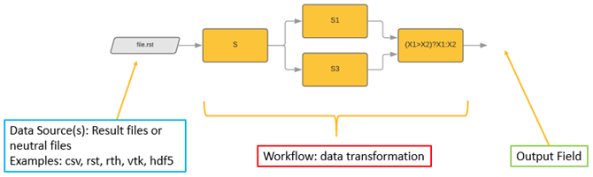

PyDPF-Core#
Ansys Data Processing Framework (DPF) provides numerical simulation users and engineers with a toolbox for accessing and transforming simulation data. With DPF, you can perform complex preprocessing or postprocessing of large amounts of simulation data within a simulation workflow.
DPF is an independent, physics-agnostic tool that you can plug into many apps for both data input and data output, including visualization and result plots. The following table shows an exhaustive list of supported apps by DPF and their related formats:
Solver |
File format |
Server version |
DPF examples |
|---|---|---|---|
MAPDL |
.rst, .mode
.rfrq, .rdsp
|
1.0 and later
(Ansys 2021 R1)
|
|
LS DYNA |
.d3plot, .binout |
4.0 and later
(Ansys 2022 R2)
|
|
Fluent |
CFF restart files
.cas/dat.h5
|
7.0 and later
(Ansys 2024 R1 pre0)
|
|
Project files
.flprj
|
|||
CFX |
CFF files
.cas/dat.cff
|
7.0 and later
(Ansys 2024 R1 pre0)
|
|
Project files
.flprj
|
Visualisation is ensured by VTK and leverages PyVista tools.
Using the many DPF operators that are available, you can manipulate and transform this data. You can also chain operators together to create simple or complex data-processing workflows that you can reuse for repeated or future evaluations.
The data in DPF is defined based on physics-agnostic mathematical quantities described in self-sufficient entities called fields. This allows DPF to be a modular and easy-to-use tool with a large range of capabilities.
{kind=link}
The ansys.dpf.core package provides a Python interface to DPF, enabling
rapid postprocessing of a variety of Ansys file formats and physics solutions
without ever leaving the Python environment.
Brief demo#
Here is how you open a result file generated by MAPDL (or another ANSYS solver) and extract results:
>>> from ansys.dpf.core import Model
>>> from ansys.dpf.core import examples
>>> model = Model(examples.find_simple_bar())
>>> print(model)
Here is how you plot displacement results:
>>> disp = model.results.displacement().X()
>>> model.metadata.meshed_region.plot(disp.outputs.fields_container())
For comprehensive examples of how you use PyDPF-Core, see Examples.
Key features#
Computational efficiency
DPF is a modern framework based on new hardware architectures. Thanks to continued development, new capabilities are frequently added.
Generic interface
DPF is physics-agnostic, which means that its use is not limited to a particular field, physics solution, or file format.
Extensibility and customization
DPF is developed around two core entities:
Data represented as a field
An operator to act upon this data
Each DPF capability is developed through operators that allow for componentization of the framework. Because DPF is plugin-based, new features or formats can be easily added.
Accessing and enriching DPF capabilities#
Most of the DPF capabilities can be accessed using the operators. For more information, see _ref_dpf_operators_reference.
The following sections are summaries. For more information, see DPF capabilities and scripting languages.
Accessing DPF Server files
DPF capabilities are accessible when DPF Server files are available. These files can be accessed using the Ansys installer and DPF Server.
To use the Ansys installer, download the standard Ansys installation using your preferred distribution channel, and install Ansys following the installer instructions. For information on getting a licensed copy of Ansys, visit the Ansys website.
The DPF Server package is independent of the Ansys installer. For more information, see Getting started with DPF Server.
Accessing capabilities with scripting
C++ documentation:
On the `Developer Documentation <https://developer.ansys.com/docs>`_page of the Ansys Developer portal, see Data Processing Framework (DPF).
PyDPF documentation:
Mechanical scripting (IronPython):
Data Processing Framework in the Scripting in Mechanical Guide.
Python Result in the Mechanical User’s Guide.
Enriching DPF capabilities
User guide in the DPF C++ Client Library
Custom operators in the PyDPF-Core documentation
Documentation and issues#
Documentation for the latest stable release of PyDPF-Core is hosted at PyDPF-Core documentation.
In the upper right corner of the documentation’s title bar, there is an option for switching from viewing the documentation for the latest stable release to viewing the documentation for the development version or previously released versions.
You can also view or download the PyDPF-Core cheat sheet. This one-page reference provides syntax rules and commands for using PyDPF-Core.
{kind=link}
On the PyDPF-Core Issues page, you can create issues to report bugs and request new features. On the PyDPF-Core Discussions page or the Discussions page on the Ansys Developer portal, you can post questions, share ideas, and get community feedback.
To reach the project support team, email pyansys.core@ansys.com.